How can we improve the ecological conditions within Rincon Heights? Four weeks of field data, a century of maps and aerial imagery, and a restoration plan in three stages, from fixing what's already there to building what the neighborhood will need next.
The Rincon Heights wash corridor, the backbone of the study.
The neighborhood
Rincon Heights sits on the edge of the University of Arizona campus, next to SouthREC and Mansfeld Magnet Middle School. A desert wash runs through it, a remnant of the system that once carried mountain runoff across the Tucson basin.
The wash still supports denser vegetation, more moisture, and more habitat than anything around it. But parking lots, garages, roads, and institutional hardscape have cut it off from the rest of the neighborhood. Conditions shift from shaded, vegetated corridor to exposed pavement within a few steps.
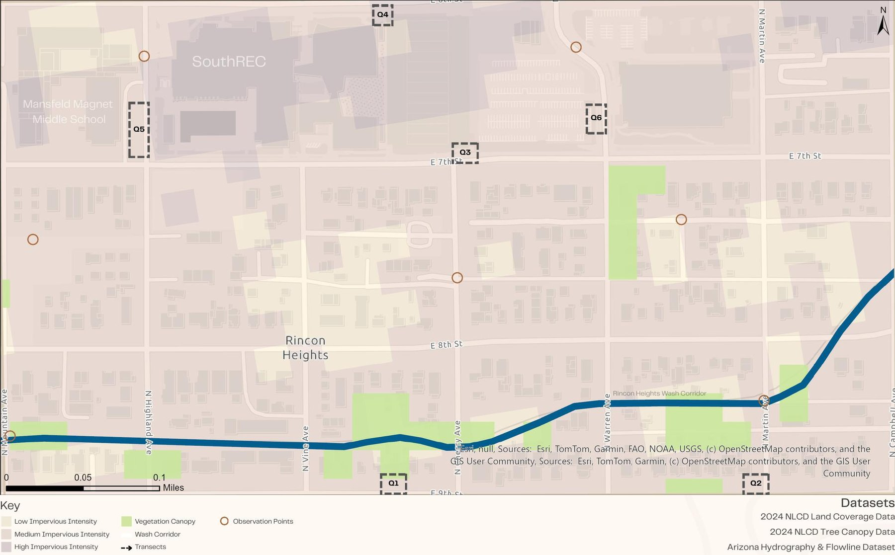
Study area with impervious intensity, canopy, the wash corridor, and the six sampling quadrats. Data: 2024 NLCD land cover and tree canopy, Arizona Hydrography and Flowline.
Boundaries
N Mountain Ave to N Campbell Ave, E 6th St to E 9th St
Stakeholders
Residents, the neighborhood association, and the University of Arizona
How it changed
Aerial imagery from 1992 to 2025 shows a residential desert neighborhood becoming an institutional one. The wash stayed visible the whole time. What changed was everything around it.
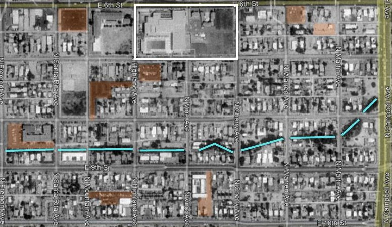
1992Mostly residential, with little large-scale pavement.
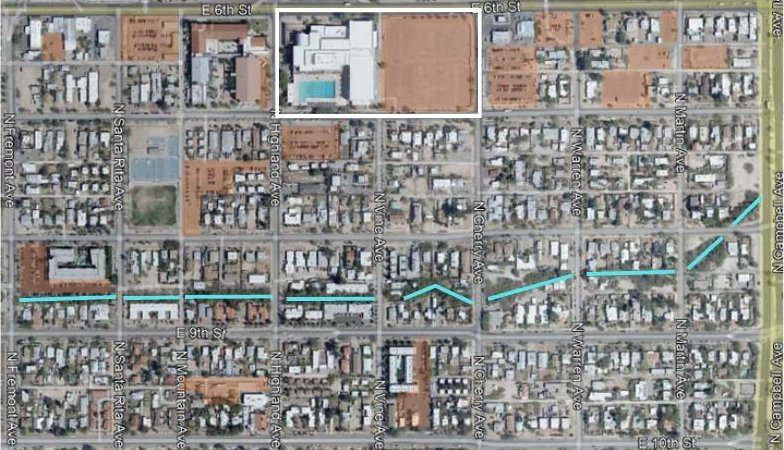
2008Institutional and hardscaped areas start to grow.
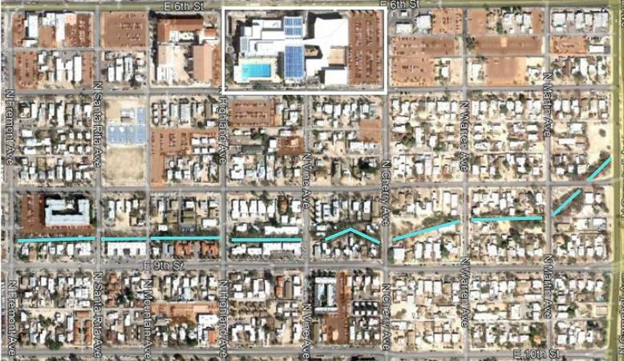
2011The LEED Platinum SouthREC expansion opens, and impervious cover jumps.
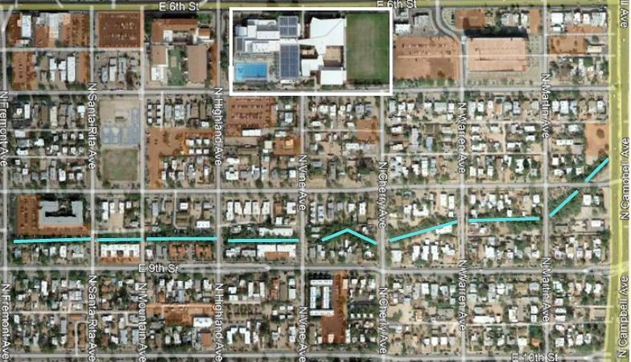
2017A new parking garage adds more hardscape.
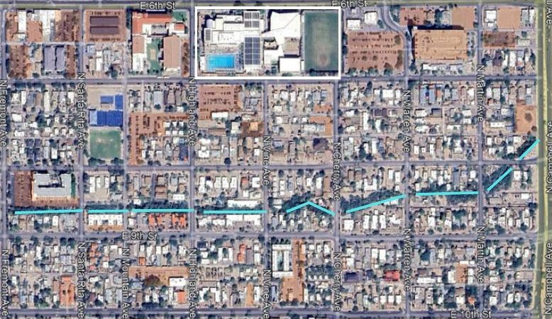
2025Fragmented habitat and isolated corridors around the wash.
Aerial imagery from Google Earth Pro. The 2011 expansion is the same building I studied in my senior capstone: a certified-green building that still added to the neighborhood's pavement.
Field data
Eight site visits over four weeks. Six quadrats, each placed in a different kind of landscape: residential edges, wash-adjacent ground, institutional corners, and parking. Each one recorded species richness, abundance, density, Shannon diversity, native presence, and wildlife activity.
23Species recorded across all quadrats, 19 of them native.
2.64Shannon diversity index for the study area as a whole.
9Bird species observed, from verdins to Costa's hummingbirds.
Diversity drops off at the pavement
Shannon diversity by quadrat. The residential and wash-adjacent edges scored nearly three times higher than the middle school parking lot, where only two species turned up and no animal or insect activity was seen. The SouthREC field edge near the wash had the most wildlife activity of any site.
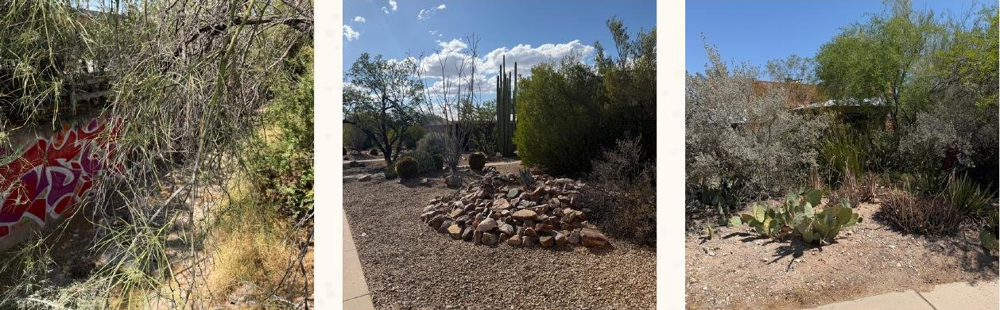
Remnant habitat across the site: wash edge, xeric yards, and native streetscape planting.
Notable species:
Santa Rita prickly pear
Golden barrel cactus
Blue palo verde
Velvet mesquite
Ocotillo
Vermilion flycatcher
Costa's hummingbird
Hermit thrush
Ornate tree lizard
Sonoran bumblebee
Monarch butterfly
Three stages
Each plan builds on the one before it. The first is cheap and immediate, the second takes time and coordination, and the third asks what the neighborhood needs to look like as Tucson keeps getting hotter. Starting small makes the bigger moves possible.
Section 01
Repair
Now · low cost
Strengthen the systems already there, without restructuring the neighborhood.
Institutional landscape improvements
Parking lot improvements
Residential streetscape enhancement
Neighborhood biodiversity network
Wash corridor restoration
Section 02
Reconnect
Next · moderate investment
Make ecology part of daily life: visible, walkable, and shared.
Ecological education markers
Gathering and open space nodes
Community and pollinator gardens
Shaded neighborhood connections
Wash ecology trail
Section 03
Regenerate
Long term · major investment
Build the neighborhood itself into an environmental system.
Shaded transportation corridors
Vertical living wall systems
Renewable energy parking canopies
Water harvesting networks
Ecological architecture
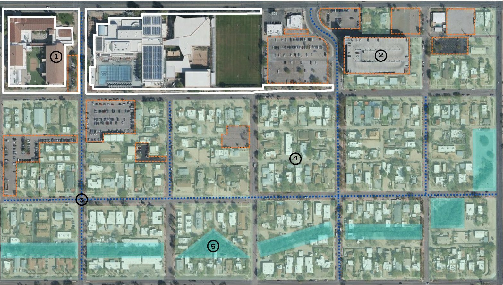
Plan 1: Repair. Numbers match the list.
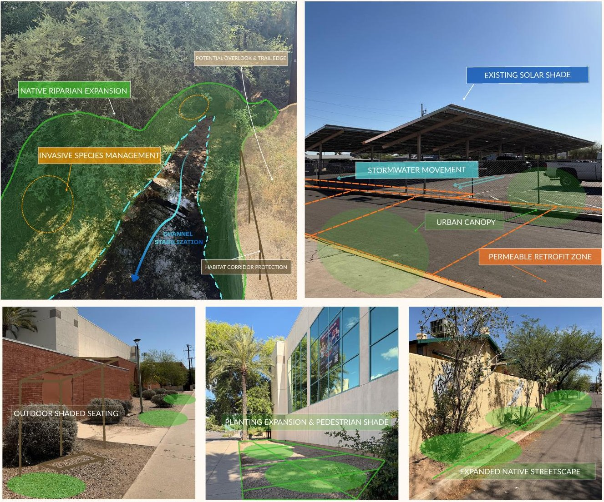
Repair moves drawn onto site photos.
Section 01
Repair
Now · low cost
Remnant desert vegetation, shaded streets, and the wash still cool the neighborhood, absorb stormwater, and support wildlife. Repair reinforces them with realistic retrofits instead of a redesign.
Institutional landscape improvementsXeriscaping, shaded seating, and native canopy around SouthREC and Mansfeld Middle School.
Parking lot improvementsPermeable paving, bioswales, shade trees, and larger landscape islands to cut heat and soak up stormwater.
Residential streetscape enhancementNative vegetation and expanded canopy for shaded, connected walking routes.
Neighborhood biodiversity networkNative planting that links yard-scale habitat patches back to the wash.
Wash corridor restorationNative riparian planting, erosion stabilization, invasive species management, and cleanup.
Partners
City of Tucson
University of Arizona
Rincon Heights Neighborhood Association
Pima County Regional Flood Control District
Tucson Clean & Beautiful
Residents and homeowners
Precedents
Mission Reach Ecosystem Restoration, San Antonio, TX. Orange Mall, Arizona State University, Tempe, AZ.
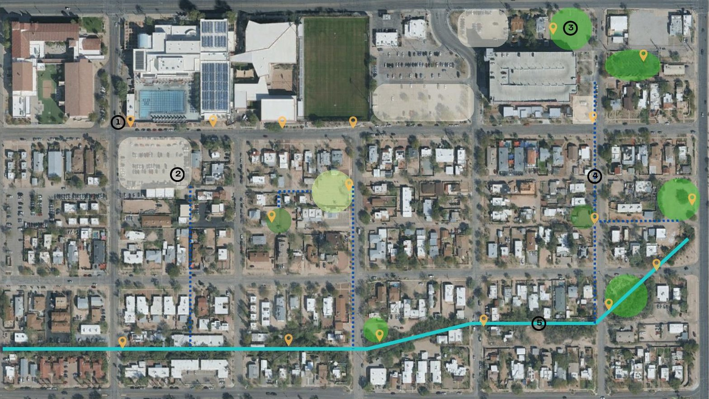
Plan 2: Reconnect. Numbers match the list.
Section 02
Reconnect
Next · moderate investment
Walking through Rincon Heights means broken routes, exposed streets, and almost nowhere to gather, right next to one of the biggest recreation centers in the region. The ecology is there, but it sits in the background. Reconnect brings it into everyday life.
Ecological education markersSignage on native plants, wash ecology, stormwater, and local wildlife along the trail system.
Gathering and open space nodesSelect paved areas become shaded places to sit, meet, and spend time outside.
Community and pollinator gardensNative planting, pollinator habitat, stewardship, education, and local food production.
Shaded neighborhood connectionsShaded walking routes that tie SouthREC, residential streets, and the wash together.
Wash ecology trailA continuous trail along the wash that makes the corridor visible and accessible.
Partners
City of Tucson
University of Arizona
Rincon Heights Neighborhood Association
Tucson Clean & Beautiful
Residents and volunteers
Precedent
The Underline, Miami, FL.
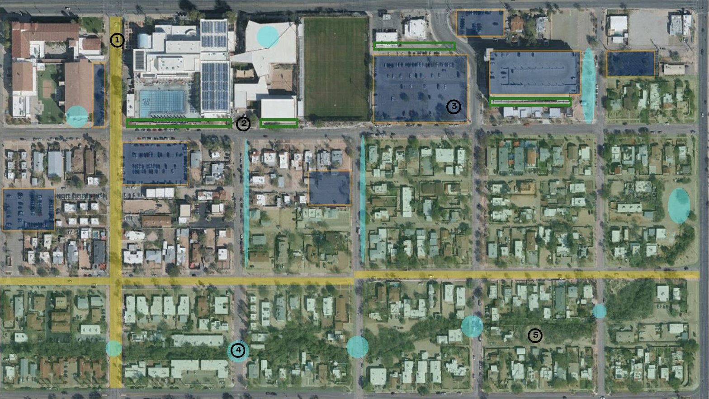
Plan 3: Regenerate. Numbers match the list.
Section 03
Regenerate
Long term · major investment
Heat will keep rising across the Sonoran Desert. Instead of trying to catch up to it, Regenerate gets ahead of it: buildings, streets, and parking become working parts of the ecosystem instead of sustainability features added after the fact.
Shaded transportation corridorsMajor streets become shaded, planted routes for walking, biking, and transit.
Vertical living wall systemsVegetated walls on south-facing institutional facades to cut heat gain and support wildlife.
Renewable energy parking canopiesSolar canopies over lots and garages that shade pavement and generate power.
Water harvesting networksDistributed capture and infiltration that routes runoff into planted corridors.
Ecological architectureGreen roofs, elevated planting, and habitat-supporting surfaces built into buildings.
Partners
City of Tucson
University of Arizona
CAPLA
Sasaki
Rincon Heights Neighborhood Association
Tucson Water
Tucson Electric Power
Precedents
The Sustainable City, Dubai, UAE. Biophilic architecture in Singapore.
What changes
Ecological restoration within cities does not necessarily need to exist separately from everyday urban life.
From my closing reflection
Taken together, the three plans turn the wash from a leftover strip into the spine of the neighborhood. Repair stabilizes what's there. Reconnect puts people on it. Regenerate extends it into the streets, roofs, and parking that surround it.
The plan stays grounded in the fact that Rincon Heights is a lived-in place with its own history and residents. Nothing here asks for replacement. Each stage works within what exists and builds toward a neighborhood that's cooler, greener, and better connected over time.